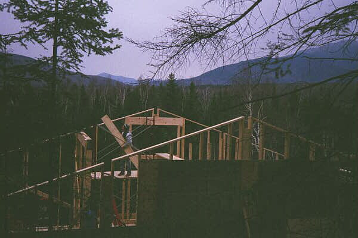

More December pictures (part 2)
Alice unloads 2x10's,
temporary flooring that will become ceiling rafters.
Steven, David and Sigmund set up scaffolding
used to help hoist the beams into place.

Frame of house as seen from behind house
looking South.
Early window view.
David trims a post that will help support the roof.